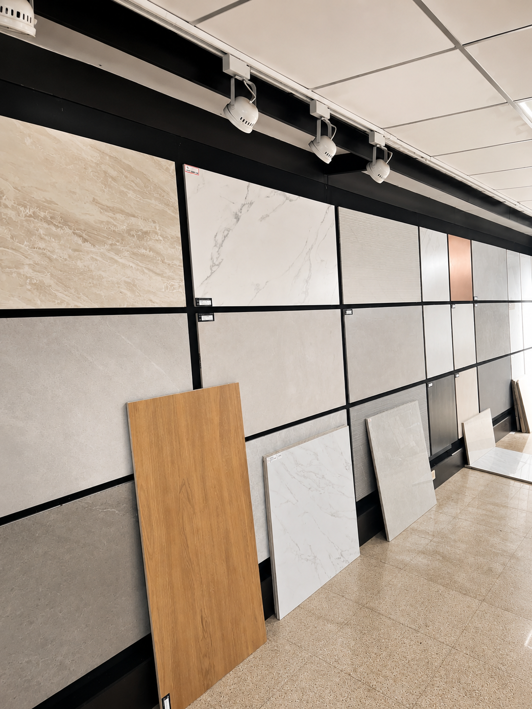
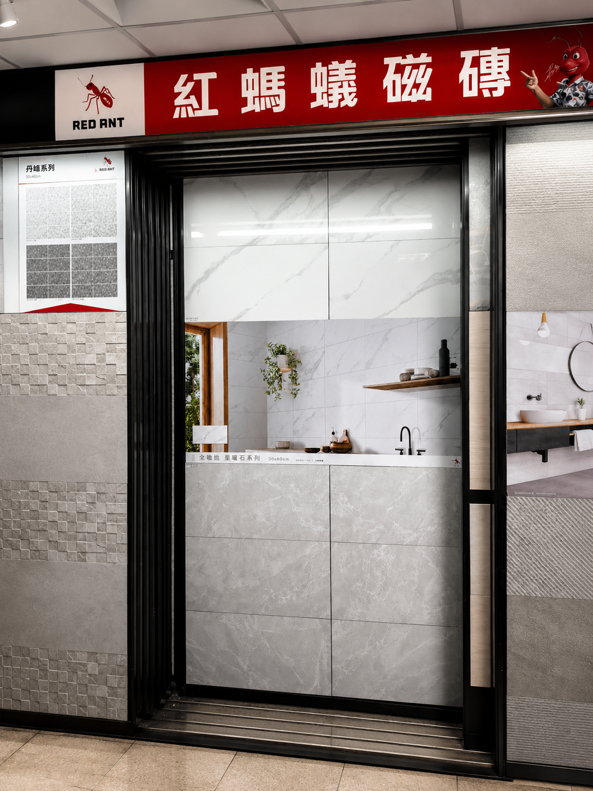
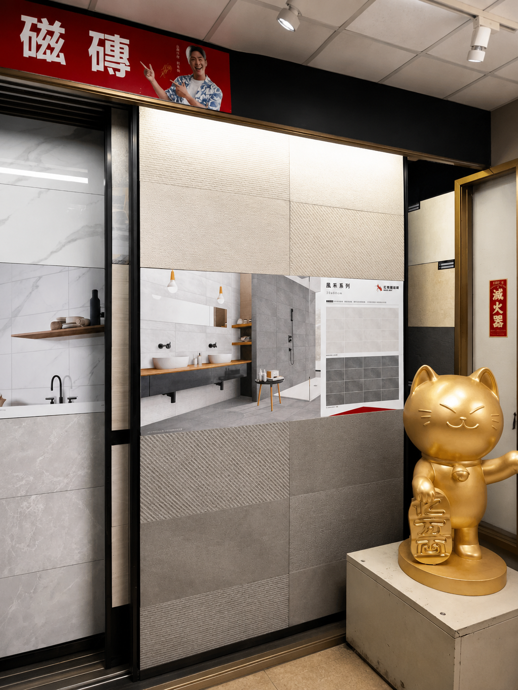
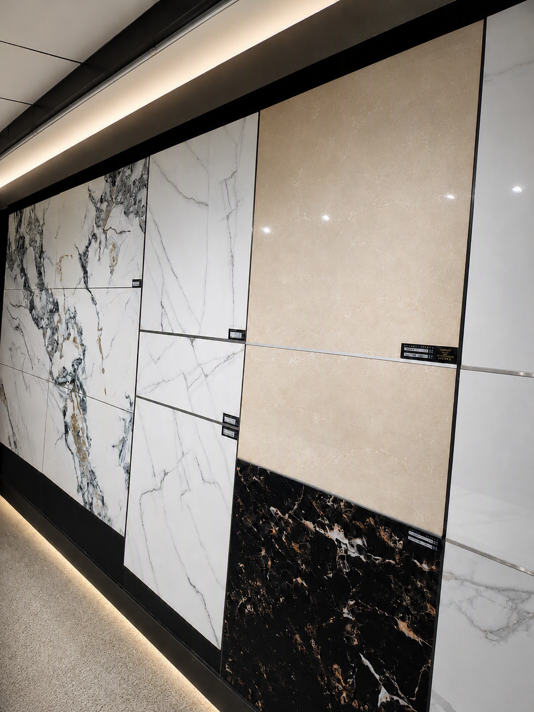

一九七五年，陳萬泉先生以一位匠人的執著，在新北板橋創立了「昇銓建材」。從一個小小的建材行，到如今擁有二十位專業團隊、橫跨全台的磁磚批發品牌。
五十一年，兩萬七千多個日夜。我們見證了台灣無數新屋的落成，也陪伴了無數家庭的幸福遷徙。
「昇」，是上升、是進步、是不停歇的創新。
「銓」，是銓選、是嚴謹、是對品質的堅持。
昇銓，代表我們對每一片磁磚的嚴選態度。不隨波逐流，不輕言妥協。從產地到客戶手中，每一片磚都要經過我們的眼睛。
陳永洋總經理繼續秉持父親的經營哲學，將昇銓的品牌精神傳承下去。






從仿木紋、仿石紋、仿大理紋到幾何拼花，昇銓建材與國內外頂尖品牌合作，提供完整的磁磚產品線。展間內每款產品皆以實際鋪貼方式呈現，讓客戶直觀感受質感、色差與搭配效果。
從選磚建議、用量估算到施工規劃，我們的團隊不只是業務，更是您的磁磚顧問。五十一年產業經驗，讓每一片推薦的磁磚都能符合您的需求。